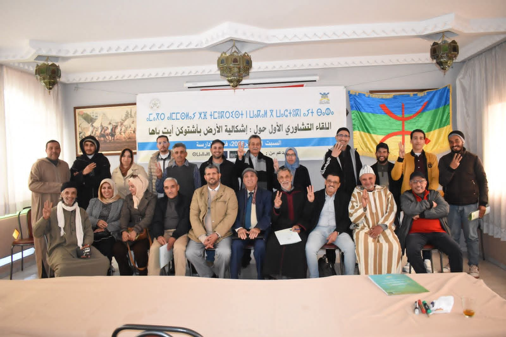
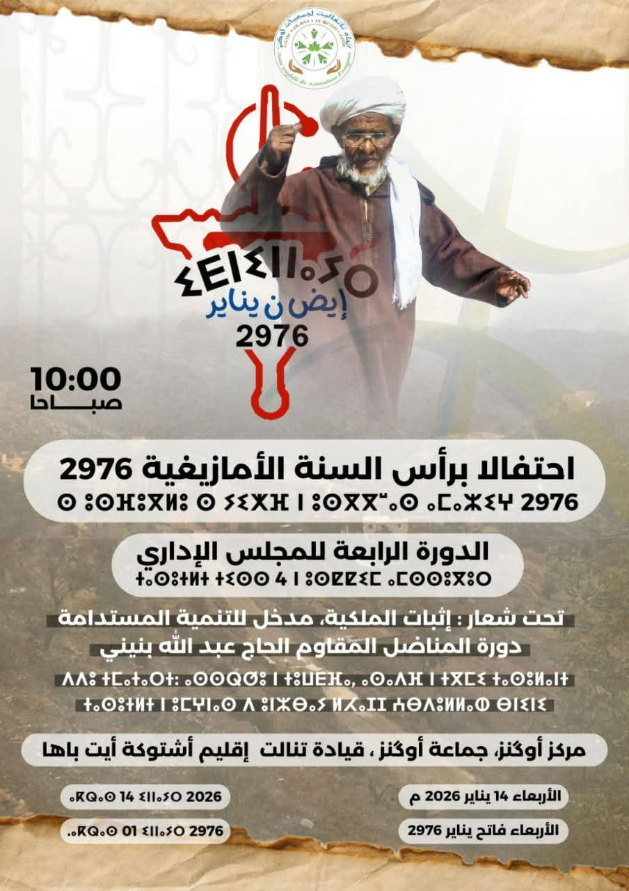
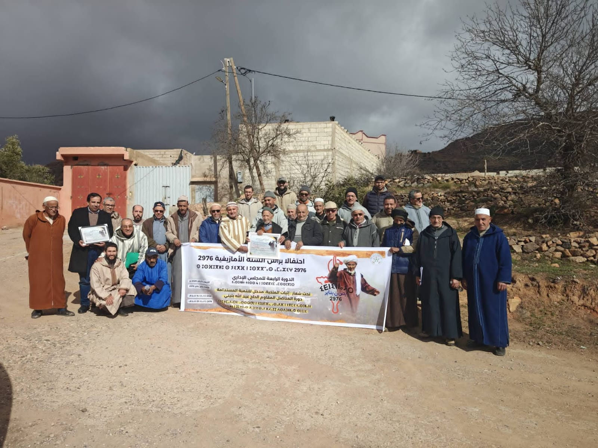

أرض أشتوكن
أرض أشتوكن: حوار تشاوري حول إشكالات العقار
نظمت الشبكة الأمازيغية واتحاد تانفاليت لقاءً حول الأراضي القبلية والسلالية لبلورة مذكرة ترافعية قانونية.
31 يناير 2026 اتحاد تانفاليت لجمعيات اوكنز
اتحاد تانفاليت لجمعيات اوكنز
نحن اتحاد يجمع جمعيات منطقة أوكنز، نهدف إلى توحيد الجهود من أجل تنمية الساكنة المحلية وتطوير البنيات التحتية والخدمات الاجتماعية. نعمل بروح الفريق لتعزيز التضامن وتسهيل سبل الحياة والتعليم لجميع أبناء المنطقة.
تأمين وصول أبنائنا وبناتنا إلى مقاعد الدراسة بأمان.

يقوم الاتحاد بالترافع عن حقوق الساكنة المحلية ويسعى لتحقيق مطالبهم المشروعة أمام الجهات المختصة.

نقدم مبادرات تضامنية لدعم الأسر المعوزة في المنطقة، بهدف تحسين ظروفهم المعيشية وتكريس قيم التكافل.

نقوم بتوفير المقررات والكتب الدراسية لدعم تلاميذ المنطقة، مساهمة منا في تشجيع التمدرس ومحاربة الهدر المدرسي في صفوف الناشئة.

يقدم الاتحاد استشارات مهنية ودعماً تقنياً للجمعيات في مجالات التخطيط والتنظيم والإدارة، لضمان نجاح مبادراتهم وتحقيق أهدافهم التنموية بكفاءة.

نعمل على تنظيم اللقاءات والفعاليات المجتمعية التي تهدف إلى تعزيز التواصل بين الأفراد والجمعيات، مما يساهم في بناء مجتمع محلي متماسك ومتعاون.

برامج تدريبية لتعزيز مهارات الفاعلين الجمعويين.


نظمت الشبكة الأمازيغية واتحاد تانفاليت لقاءً حول الأراضي القبلية والسلالية لبلورة مذكرة ترافعية قانونية.
31 يناير 2026
عقد الاتحاد دورته الرابعة تحت شعار "إثبات الملكية مدخل للتنمية" مع الاحتفاء بالذاكرة الوطنية.
14 يناير 2026